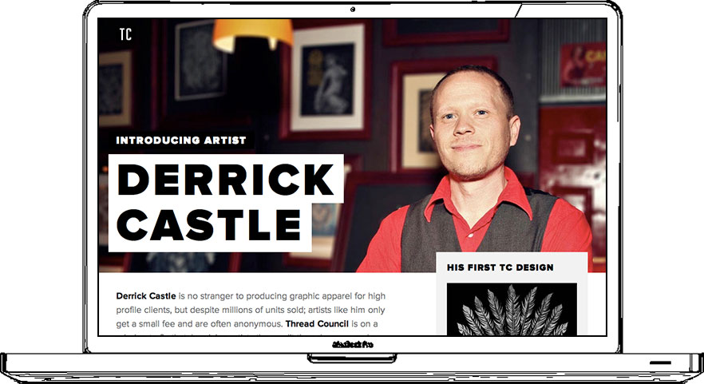
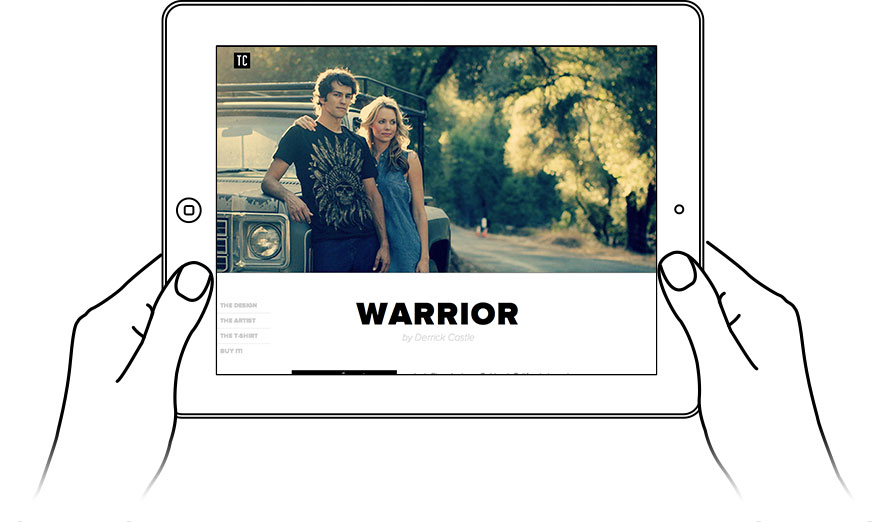
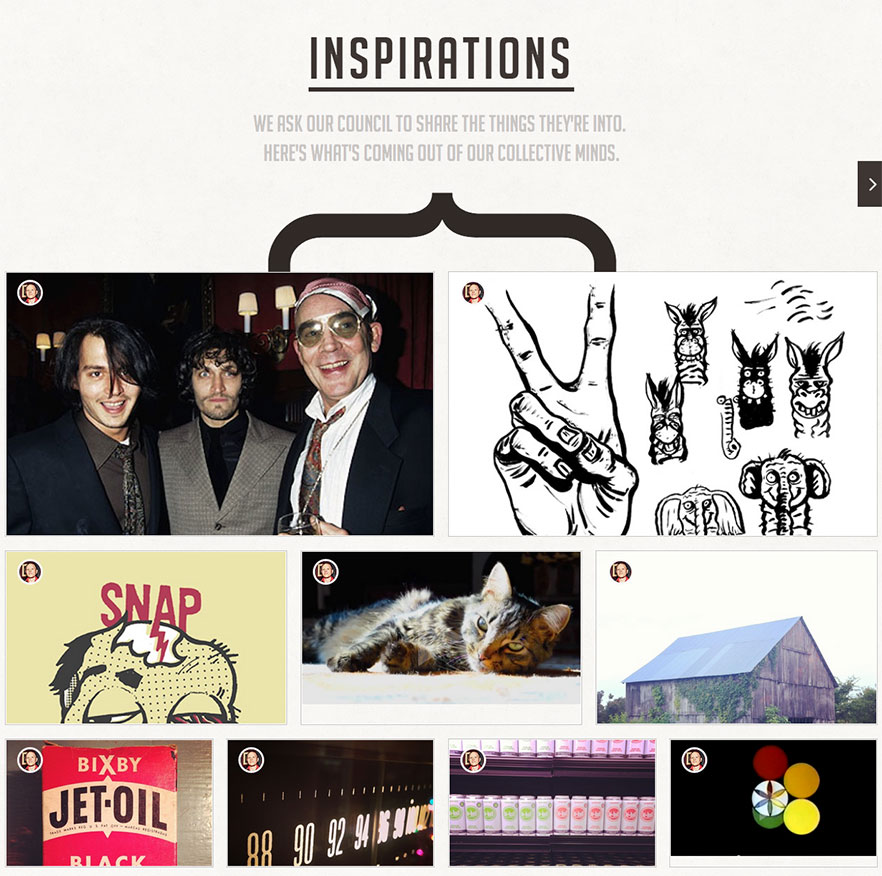
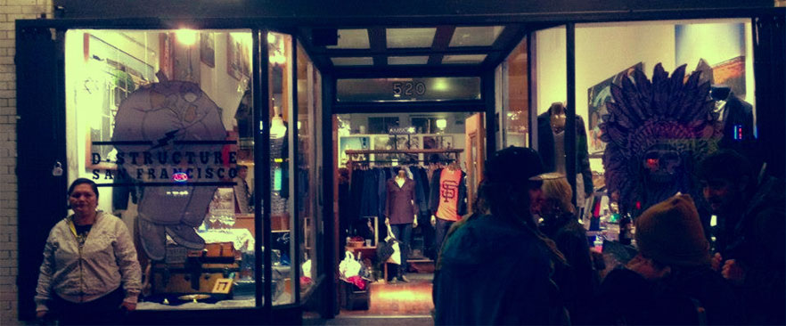
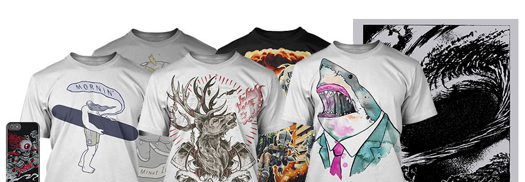

The concept of putting artists in front is one of the key ideas behind Thread Council, so we worked really hard on figuring out how to highlight that feature. In the end, we decided to create a presentation page, that is used each time an artist is added to the brand’s roster. Inside that page, we introduce the artist with his story, and also run a launch campaign with one of his shirts.
Thread Council
The Robin Hood of man’s apparel.

Thread Council is a SF based startup who has a mission: to free outstanding artists from their corporate lives. I was reached by them to work on the planning, design and implementation of the digital product.


We knew from the beggining that not everybody were gonna be driven by the desire to support an artist, there are some people who just hunt for great shirt designs. So we also created an enticing product page in order to properly showcase designs & t-shirt quality.

An extra resource was built in order to bring users to the site: an inspirations section where people could browse how Thread Council artists inspire themselves everyday.

Thread Council threw a pop-up launch party in D-Structure, to celebrate the oficial start of business. Most of the artist’s initial designs were releaved, and people had a lot of fun!

In order to show how Thread Council could change the apparel industry, we created high fidelity prototypes of a tentative admin section, where artists could directly connect with their fans, by adding new designs, talking with them and seing stats for their sales. No hidden info.

We also created a Kickstarter campaign so people could financially support Thread Council’s mission. I worked in the creation of the content for the campaign, giving structure to the text, and adding images to quickly spread the concept.
Do you like what I do?
That’s great! You can contact me if you are interesting in my services. Wanna keep looking around? Read Zokos case study.